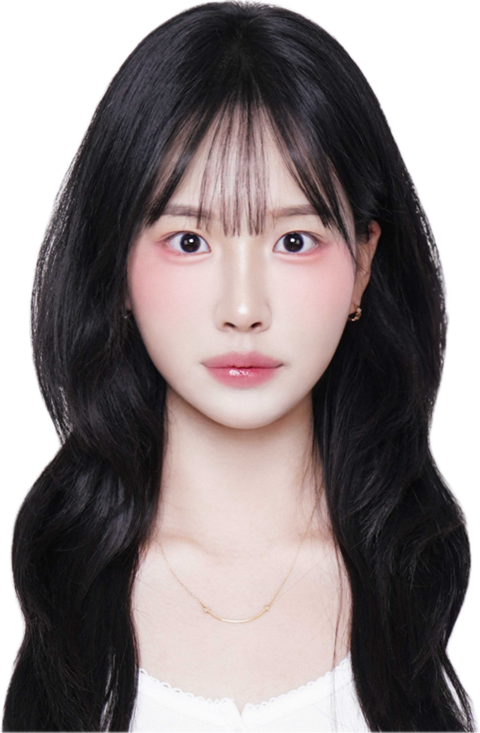

about me
산업공학을 공부하며 공정과 데이터를 숫자로 보는 법을 배웠고, 지금은 그 시각을 웹 서비스와 AI로 직접 만들어 보고 있습니다.
Education
Award & Certificates
Projects
폴더를 누르면 프로젝트가 열려요
experience(05)
삼성청년SW·AI아카데미
생성형 AI 작동 원리, AI 코딩 어시스턴트 활용, MCP 기반 챗봇과 AI 뉴스 큐레이션 웹 서비스 구현, LangChain·Agent, 파인튜닝, AI 거버넌스(윤리·데이터 보안)를 학습했습니다.
알고리즘 스터디
매주 1문제 이상을 풀고 '문제 링크 → 접근 아이디어 → 핵심 로직 → 복잡도 → 코드' 순서로 정리해 공유합니다.
비슷한 유형 접근 시간 1시간 이상 → 20~30분
도봉구청 사무보조
서고 자료 전체를 3명이 구역을 나눠 엑셀로 목록화했습니다. 정렬·필터로 빈칸과 중복값을 찾아 원본과 대조했습니다.
약 800건 2주 내 목록화 · 최종 누락 0건
학과 학생회 홍보부
게시물 기획, 템플릿 제작, 업로드 일정 관리를 맡았습니다. 행사 정보를 D-5까지 구글폼으로 받고 공지·후기·모집 3종 템플릿으로 제작을 표준화했습니다.
공지 게시 시점 행사 전날·당일 → 대부분 D-2~D-3
봉사동아리 RCY
주 1회 초등학생 약 15명과 함께하는 활동에서 활동 후보 제안과 준비물 담당을 맡았습니다.
skills
언어 · 데이터
Python, JavaScript, SQL, Pandas, NumPy, Matplotlib, Selenium
머신러닝 · AI
PyTorch, KoBERT, KIWI, LDA, LLM Prompting, MCP, LangChain, Agents
웹 개발
React, Vue 3, Vite, three.js, Django, Django REST Framework, Spring Boot
데이터베이스 · 인프라
PostgreSQL, SQLite, Flyway, Docker Compose, GitLab CI
협업 도구
Git, GitLab, Jira, Figma, Notion
공정 · 품질
DMAIC, C&E Matrix, FMEA, 가설검정, Minitab, Excel